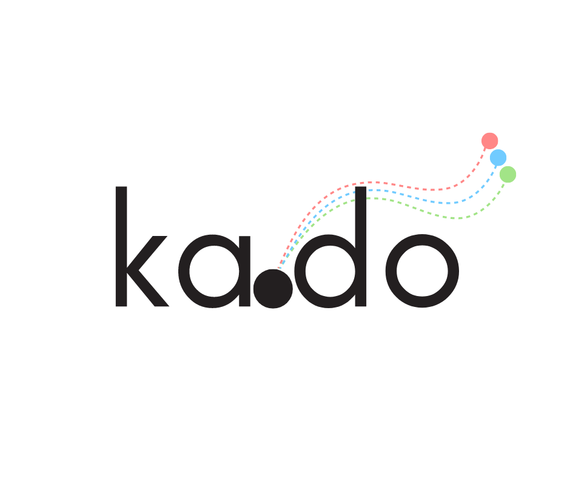

Enterprise-Grade Infrastructure Automation Solution
"A robust orchestration platform that unifies infrastructure management through modular configuration"
Core Challenge:
Managing complex infrastructure deployments across multiple tools while maintaining:
• Configuration consistency
• Security compliance
• Deployment reliability
• Operational efficiency
• Cross-tool orchestration
• Policy enforcement
• Secret management
• Audit capabilities